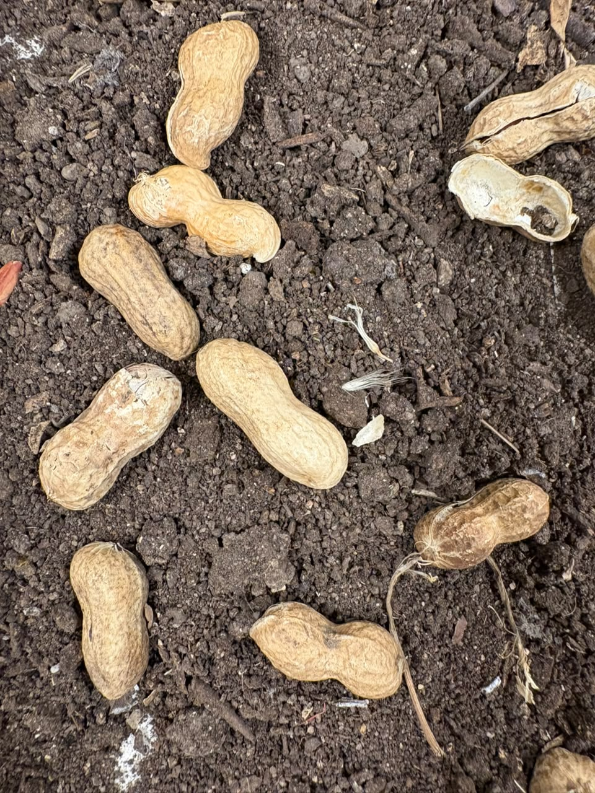
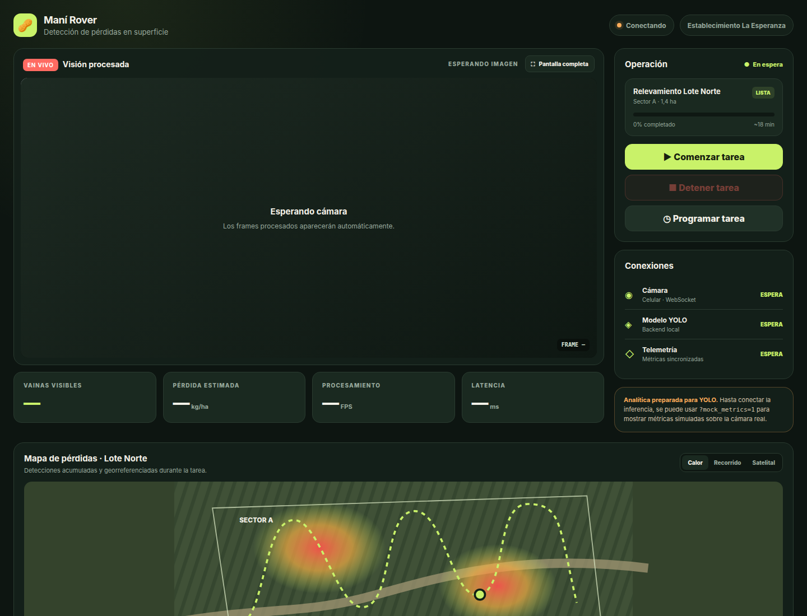
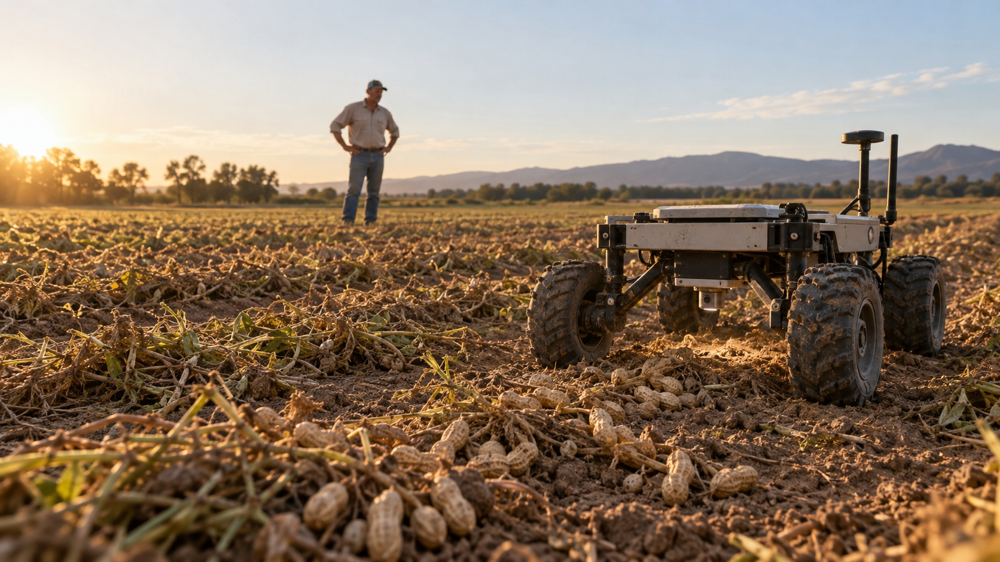

01
Observa
Un celular montado en el rover captura imágenes reales del suelo mientras avanza.
Tecnología aplicada al agro
Rehar usa visión por computadora para detectar vainas de maní visibles sobre el suelo y transformar una recorrida en información útil.

vaina 0.91 vaina 0.87 vaina 0.83Una pérdida difícil de ver
La cantidad varía según el cultivo, el suelo, el momento de cosecha y la regulación de la maquinaria. El muestreo manual sirve, pero observa pocos puntos y demanda tiempo.
Rehar propone sumar una mirada continua sobre la superficie: registrar, detectar y comparar para saber dónde vale la pena revisar.
Orden de magnitud reportado para pérdidas de cosecha.
No todo ese volumen queda visible ni es recuperable. El prototipo se enfoca únicamente en las vainas que una cámara puede observar sobre la superficie.
De la imagen a una decisión
La demostración conecta robótica, una cámara móvil y un modelo de visión por computadora en un flujo simple.
Un celular montado en el rover captura imágenes reales del suelo mientras avanza.
El backend procesa los frames con YOLO e identifica las vainas visibles.
El visor muestra las detecciones y permite estimar la pérdida superficial sobre un área calibrada.
Prototipo integrado
El MVP fue pensado para demostrar el recorrido completo: mover el robot, transmitir imágenes desde un celular, procesarlas en una notebook y ver el resultado en tiempo real.


Visualización conceptualAlcance honesto
Rehar todavía no es una máquina agrícola de escala real. Es una forma concreta de comprobar que la detección en superficie puede convertirse en una herramienta para el campo.
Detección visible, transmisión en vivo y estimación demostrativa.
Validación agronómica, georreferenciación y recuperación mecánica.
Construido en Córdoba
Rehar nace en HackCórdoba como una exploración abierta entre agro, robótica y visión por computadora.
Ver repositorio